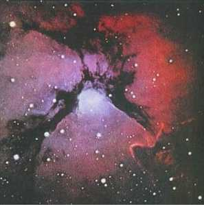
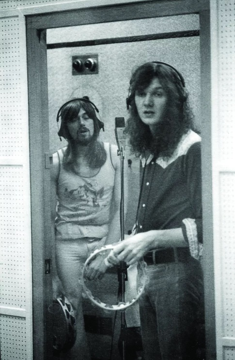
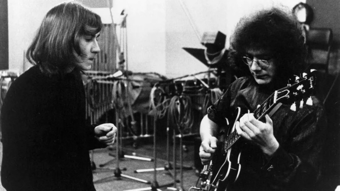
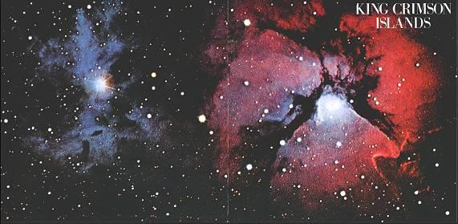
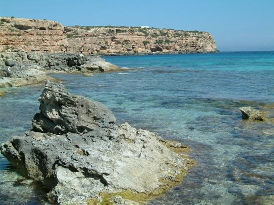
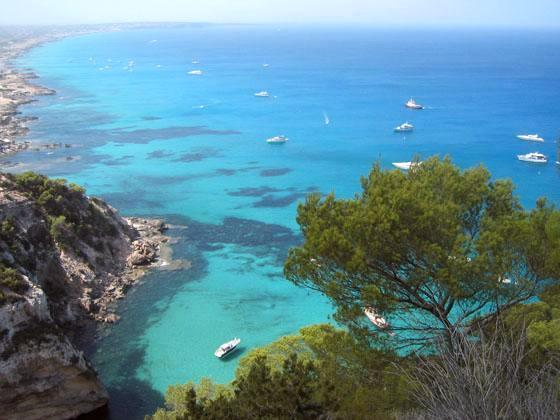

Islands
Islands
|
|
|
 Grabado en 1971 Si hubiera que elegir un disco paradigma del rock progresivo, éste sin duda estaría entre los finalistas. Extraño por su variedad, muy emotivo, combina magistralmente formas musicales difíciles de conciliar en otro ámbito. La introducción de cello que abre el disco ya muestra ese camino, y desencadena el fluir de otros instrumentos. La enigmática voz de Burrell ahonda el clima de cuento. Las hermosas y suaves melodías de Formentera Lady luego se funden con las voces disonantes del mismo Burrell y de la soprano. En medio surgen tramos de cuerdas que preanuncian el siguiente tema, el potente instrumental Sailor's tale, el más cercano al tipo de música que vendría en siguientes discos de la mano de otra formación; en su primera parte hay un duelo de saxo y guitarra, y luego Fripp ejecuta uno de los solos de guitarra más excitantes de la historia del rock, siendo a la vez muy original ya que está conformado por raros acordes en lugar de punteo (Fripp contó alguna vez que para ese solo utilizó técnica de banjo que había aprendido con su antiguo instructor de guitarra). Se respira aire de taberna humeante, de cueva clandestina, de refugio de marginados. Explota un riff de saxo en medio de The letters, dando comienzo a una sección instrumental jazzera que culmina con un crescendo hacia la desesperación, acompañando el momento dramático de la letra (The letters es una recreación del tema Drop In, tocado habitualmente en vivo por la primera formación de KC en el '69). Pegadito al "blues psicodélico" Ladies of the road (con estribillo estilo Beatles, y cuyos arreglos con teclado son la única reminiscencia del disco anterior, "Lizard") viene el bellísimo preludio con aire barroco (basado en las primeras notas de una pieza para guitarra escrita por Fripp en 1967; en la recreación para este disco contó con la participación de un conjunto de cámara y con preeminencia del oboe). La hermosa canción Islands cierra con un exquisito solo de corneta y deja al oyente extasiado, quien imagina sin esfuerzo caminar por las tranquilas playas de las islas. Importante contribución de los músicos invitados.
Letras de Sinfield - Música de Fripp Músicos invitados: Keith Tippett (piano), Robin Miller (oboe), Mark Charig (corneta), Harry Miller (contrabajo) y Paulina Lucas (soprano). No se acreditó en el disco la intervención del violinista Wilf Gibson en la última parte de Formentera lady, y como director de la pequeña orquesta de cuerdas en Prelude.... Rechazó reemplazar a David Cross en el '74. Notas * La pieza Tremelo study in A major (Spanish Suite), predecesora de Prelude: Song of the gulls, se editó en el disco The Brondesbury tapes en 2001, con grabaciones de 1968 de Giles, Giles and Fripp. Fripp adaptó la pieza para un conjunto de cuerdas, y lo dirigió en la grabación. Pero después de un tiempo admitió: «Dirigí el conjunto de cuerdas, compuesto por curtidos músicos de sesión londinenses, con un lápiz. Tuvieron la cortesía profesional de ignorar todas mis indicaciones. Nunca supe cuál de ellos daba las indicaciones discretamente». * El tema Drop In, predecesor de The letters, se editó en el CD "Epitaph". * En una entrevista Fripp dijo que la originalidad del solo de Sailor's tale se debe a que usó en la guitarra técnicas de ejecución de banjo, instrumento que había aprendido con su antiguo instructor cuando era adolescente. * En la pieza Islands Fripp toca además armonio. * Originalmente Boz se integró a KC solo como cantante; había participado con su voz en varias bandas, y en 1968 grabó un demo con dos temas de Bob Dylan (I shall be released y Down in the flood) acompañado por músicos que en ese momento estaban formando Deep Purple (Lord, Paice y Blackmore, más un bajista). Como Fripp no encontró un bajista que lo satisfasciera, lo instruyó a Boz para tocar el bajo desde dos meses antes de la primera presentación de la nueva formación en abril de 1971. A fines de ese año Fripp quiso reclutar a John Wetton como bajista para que Boz se concentrara en el canto, pero los demás miembros del grupo no aceptaron (varios meses después Wetton se incorporaría a una nueva encarnación de KC con su bajo y su voz). Paradógicamente, en 1973 Burrell fue miembro fundador de la banda Bad Company, y formó parte de ella por varios años... como bajista, no como cantante. * Ian Wallace fue miembro junto a Jon Anderson de una banda llamada The Warriors entre 1963 y 1967, antes de que Anderson y Squire formaran Yes. Grabaron un simple y tocaron en un film en el '64. En noviembre del '68 Wallace suplantó a Bruford en un recital de Yes. A mediados del '72 Bruford reemplazó a Wallace en King Crimson. Abajo x2: Fripp enseña a tocar el bajo a Boz.
Abajo x2: en el estudio de grabación   
* La portada americana muestra la nebulosa Trifid, de la constelación Sagitario. Otras islas.
  Formentera, isla española del archipiélago Baleares en el Mediterráneo, donde Sinfield tomó vacaciones e inspiró la letra de la primera canción del album. |